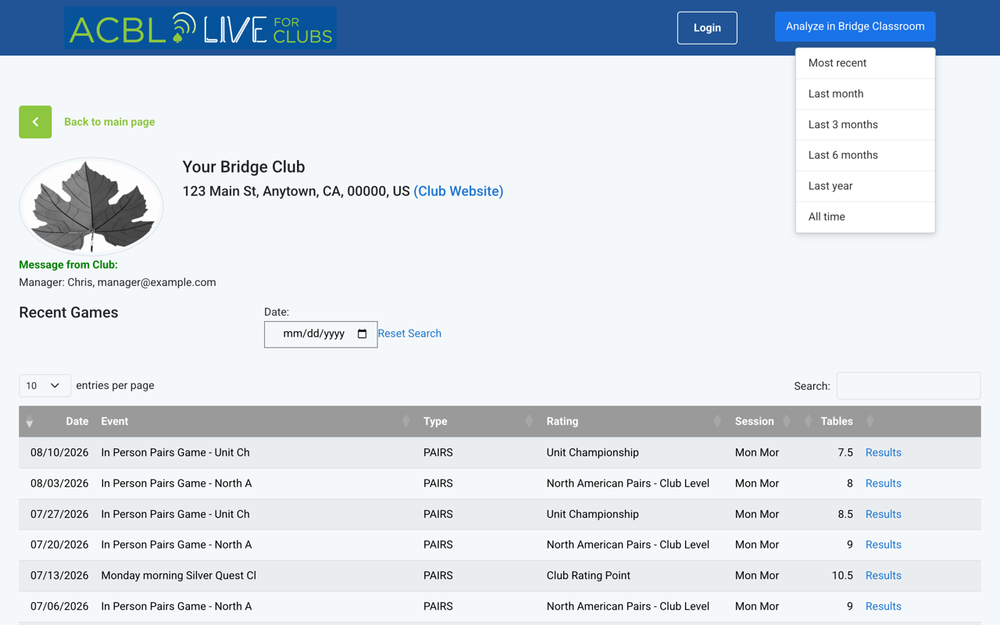

Bridge Classroom Fetch
Your game, in one click. A browser extension that takes the results page you are already looking at and sends the whole game to Bridge Classroom for analysis.
Where it works
- ACBL Live for Clubs: one club game, or every game in a date range.
- ACBL Live: tournament results, one event at a time.
- Bridge Base Online: tournament results and single deals. For your own table it also captures the cardplay.
What it does
Click the button it adds to the page. The extension reads that game’s boards, contracts, scores and comparisons, and opens Bridge Classroom’s Game Analysis with them, which explains why each board went well or badly. No files to download, and nothing to upload again.
What it doesn’t do
It runs only on those sites, only when you click it, and sends results only to Bridge Classroom. Other players’ real names are deliberately not collected from Bridge Base Online. No analytics, no tracking, no accounts. The ACBL sites and BBO’s results pages need your own sign-in there; a single BBO deal needs nothing.
